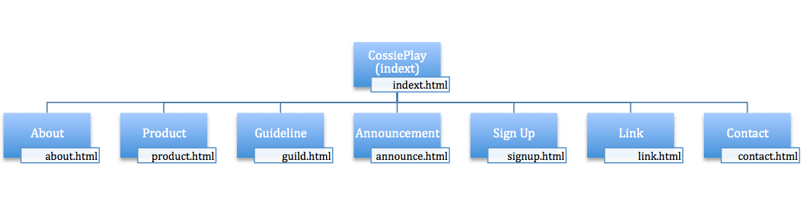

Name: Tung Han Wu
Login: JC310636
Cosplay is contraction of the words costume play. Cosplayer often dress with costume to play a role from comic, cartoon, video games, movie...est. The rapidly growth in number of Cosplayers as hobby since 1990. The phenomenon is significant popular culture in Japan and dramatically pass through all-over the world. We are a small family-run local business, operating in Hulkstown since 2012,hoping to improve our business by getting on the Internet. Since Internet become popular used, we want to depending on website to transmit the information about Cosplay culture and our business to more people. We also expecting the site to appeal to a younger audience from high school and young adults cosplaying.
People usually dress with formal clothes. It's always difficult for people to dress differently. Therefore, parties became a best excuse for people to try on a new dree. In this wenbsite, we established a site for people to have better understand of cosplay parties, call guideline. It describes the basic structure of party procedure, fee payment and safety consideration for people to attend the party without concern. The website is simple for people to click keyboard to discover the request from Internet. It is contrast with opening a store, it only available and provide the service for nearly area. By doing the change to use Internet will be a shortcut for this business toward success.
Since client already mentioned their cosplay user ages is around 35-50, they want the site to appeal and target to a younger audience. They want more people would come to the parties and get costumes made if they knew about the business.
 ...